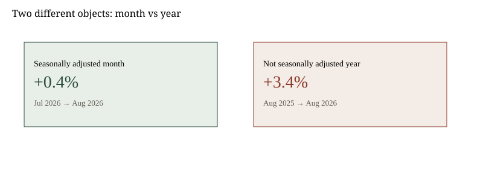

United States · prices · 13 September 2026
August CPI-U rose 0.4 percent on the month and 3.4 percent on the year.
images/cpi-hero.svg.
What is agreed across desks
The Bureau of Labor Statistics published the August 2026 Consumer Price Index on 11 September. The all-items Consumer Price Index for All Urban Consumers rose 0.4 percent in August on a seasonally adjusted basis. Over the twelve months ending in August it rose 3.4 percent, not seasonally adjusted. Those two percentages answer different questions. The first compares July with August after seasonal adjustment. The second compares August 2025 with August 2026 without that adjustment.
The same release split the basket. Food rose 2.7 percent over the year. Energy rose 16.3 percent over the year. Gasoline (all types) rose 27.4 percent over the year. Fuel oil rose 52.0 percent over the year. All items less food and energy — the core index used in many briefings — rose 0.3 percent in August, seasonally adjusted, and 2.4 percent over the year. Shelter, still a large weight, was listed at 3.0 percent over the year. These figures are on the BLS CPI home page and in the news-release summary titled “CPI for all items increases 0.4% in August; gasoline rises.”
Secondary market notes published over the weekend treated the print as in line with a 0.4 percent headline consensus and a touch firm versus a 0.2 percent core-month guess that some desks had used. The next scheduled CPI release is 14 October. The next scheduled FOMC statement is 16 September. Those are calendar facts, not forecasts.
What is only a quote or a forecast
No official at BLS announced a Federal Reserve path. Chair language from late August, quoted in weekend market notes, said policymakers must be confident that underlying inflation is moving toward the objective at sufficient speed. That is a speech about a future vote. The vote has not occurred.
Energy’s year-over-year rate is large because the comparison month is August 2025 and because refined-product prices have moved with wars and export rules that sit outside the CPI survey. The survey records what urban consumers paid. It does not assign blame to a refinery in Russia or a strait in the Gulf. Mixing those stories in one sentence is interpretation.
Mechanism a reader needs
CPI-U is a fixed-basket index. Relative importance weights in the August tables put food near 13.5 percent of the basket and energy near 7.3 percent. A 16 percent rise in a 7 percent slice moves the all-items index by a little more than one percentage point if other slices are quiet. That is why a 2.4 percent core year-print and a 3.4 percent headline can both be true on the same morning.
Seasonal adjustment exists because airfares, apparel, and some energy items have calendars. The month print of +0.4 percent is the adjusted series. The year print of +3.4 percent is not. Switching them in a headline is a common error.
The Joint Economic Committee’s monthly page restated the same BLS arithmetic and added real weekly earnings. That is a congressional overlay on the same survey, not a second survey.
What this story is not
It is not a decision to raise, hold, or cut the federal funds rate. It is not a statement that “inflation is back” or “inflation is beaten.” It is not a measurement of diesel at a specific truck stop; diesel belongs in a different piece. It is not an accusation that any political party authored the August basket.
Readers often collapse three clocks into one. The survey month is August. The release day was 11 September. The policy meeting is 16 September. A print cannot “force” a committee. The committee can cite the print. Those are different verbs. Weekend market notes that “raised bets” on a hike are descriptions of futures prices, which themselves are bets, not minutes.
Gasoline’s 27.4 percent year-over-year figure sits inside energy commodities, which rose 28.0 percent. Electricity rose 3.8 percent over the year and fell 0.2 percent on the month. Piped gas rose 4.4 percent over the year and fell 1.1 percent on the month. A household that heats with gas and commutes on gasoline is not living inside a single energy number. The all-items index averages those lives with shelter, medical care, and airline fares — the last of which BLS listed at +23.4 percent over the year.
Used cars and trucks were down 2.3 percent over the year. Medical care commodities were down 2.7 percent. Those declines are easy to omit in a political speech about “prices.” They are still in the table. Core services less energy remain the sticky slice in most briefings; shelter at 3.0 percent year-over-year is the large weight inside that slice. Owners’ equivalent rent was listed at 3.1 percent. Rent of primary residence was 2.7 percent.
None of this tells a shopper what milk cost on Saturday in Bellevue. CPI is a national urban average. Local CPI tables exist on the same BLS site and were not the object of the Friday national release. Using a national year-print to describe a single city’s weekend receipt is a category error.

Source articles and scores
| Outlet | Headline | T | N | C |
|---|---|---|---|---|
| BLS | CPI for all items increases 0.4% in August; gasoline rises | 100 | 0 | 100 |
| BLS | CPI Home latest numbers, August 2026 | 100 | 0 | 100 |
| TipRanks | The Week That Was, The Week Ahead: Macro and Markets, September 13 | 88 | +8 | 85 |
| JEC | Monthly Inflation Update, August 2026 | 94 | +15 | 90 |
Images: Wikimedia Commons BLS logo via Special:FilePath (PD-USGov-DOL). Chart is a local SVG from BLS published figures. Data: https://www.bls.gov/cpi